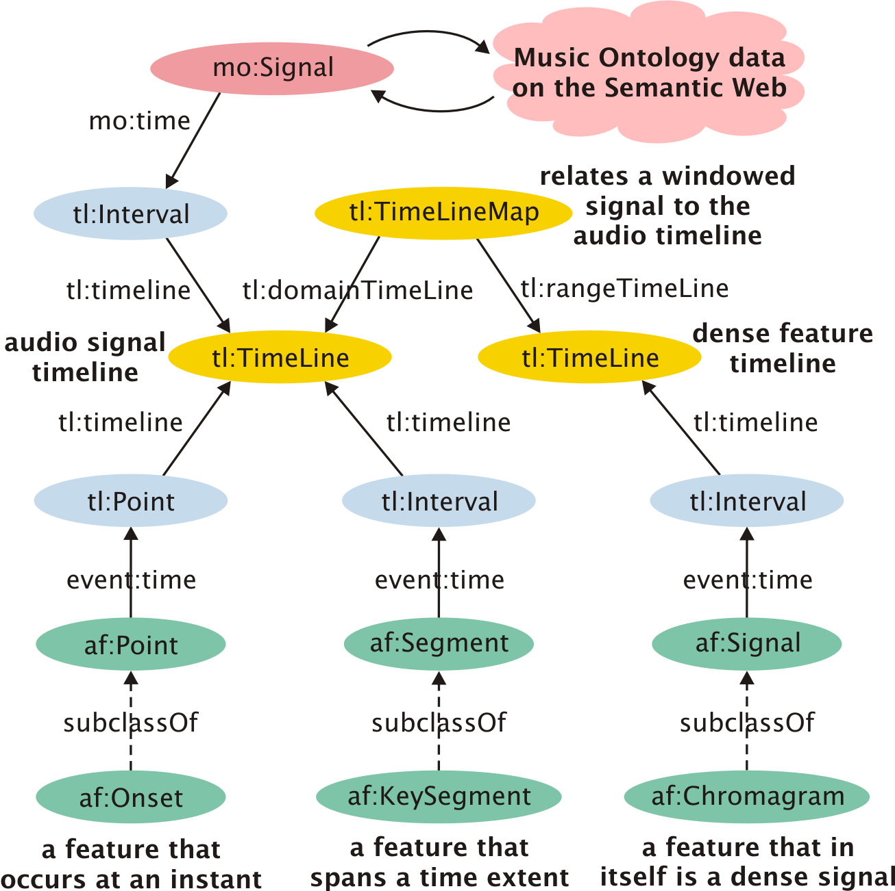
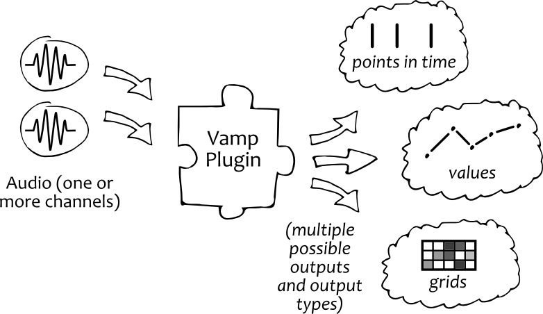
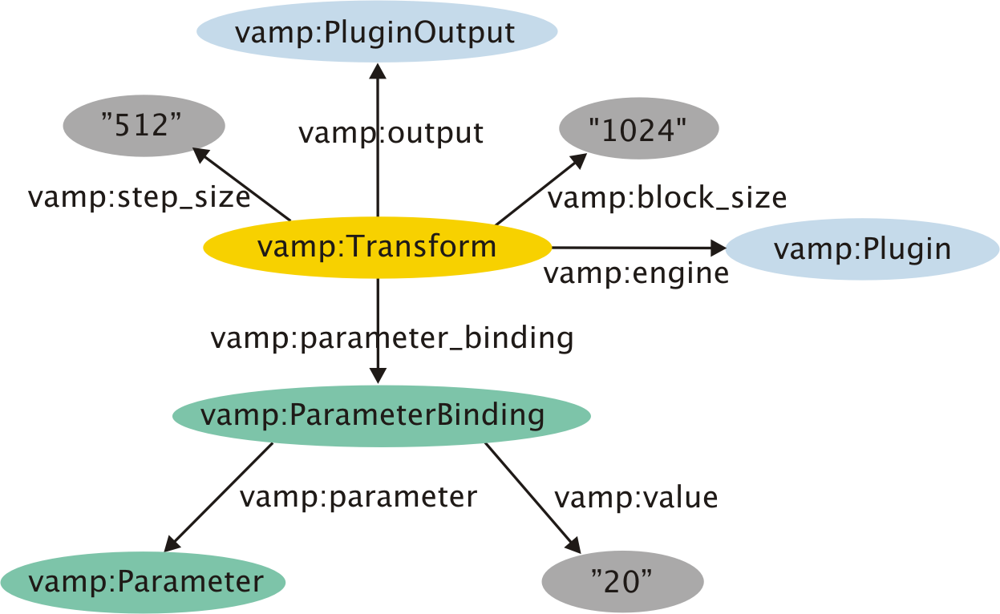
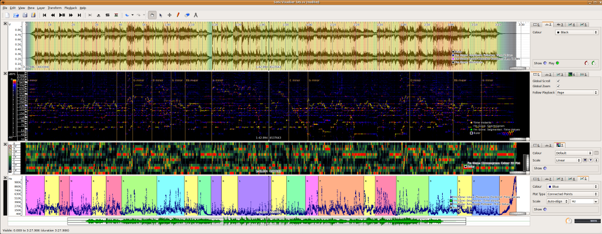
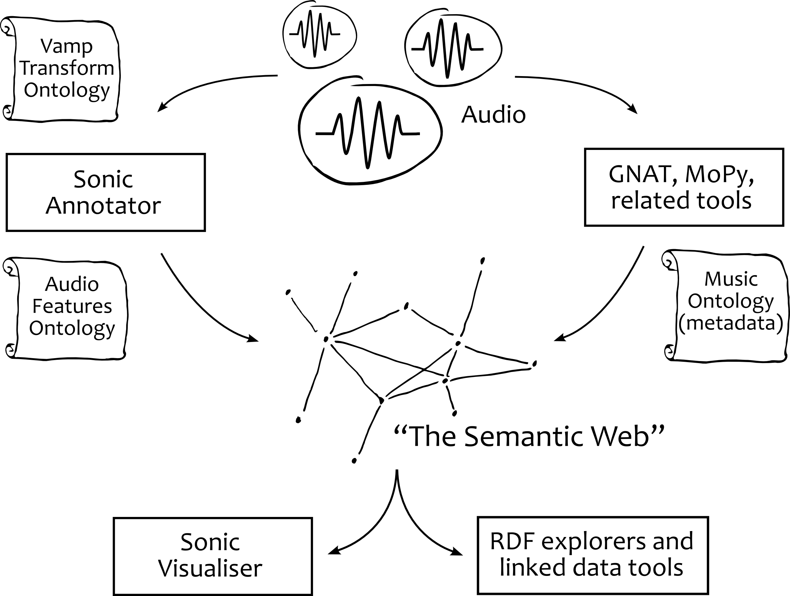
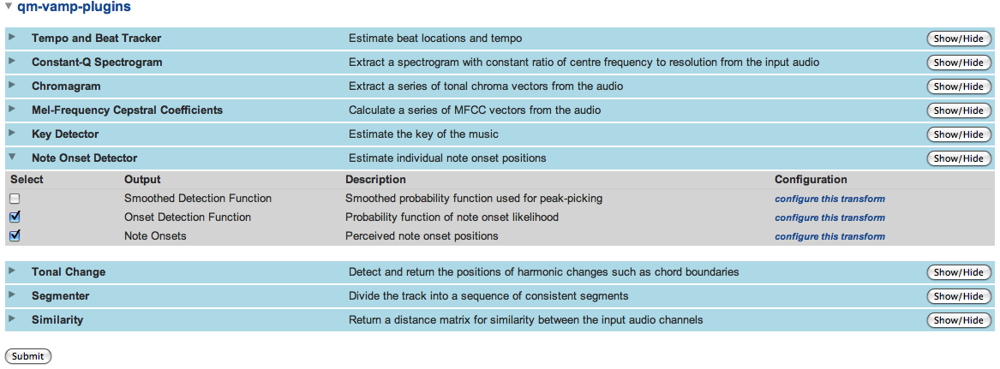

From Algorithm to Structured-Data
An introduction to using RDF in audio analysis
Overview: Ontologies
- Audio Feature Ontology (AF):
An extension of MO for publishing content-based audio descriptors.
- Vamp Plugin Ontology:
Describe audio feature extractors in RDF.
- Vamp Transform Ontology:
Vamp feature extractor configuration (plugin parameters).
- LV2 Plugin Schema:
Describe audio processor plugins and their input/output requirements.
Audio Features in RDF? Why bother?
1.69004874e+00
3.03187215e-01 1.33318623e+00 -1.30552702e-02 8.32073038e-01
-3.62798702e-01 2.55154253e-01 -2.42700580e-01 4.05045464e-02
-2.58310827e-01 4.68943617e-01 1.77893445e-01 3.98363671e-01
-1.06080685e-01 2.08837166e-01 9.14348219e-02 -4.25139800e-01
-2.61554461e-01 2.11715669e-01 2.43940887e-01 -8.34046236e-05
-3.30750712e-01 -2.83539983e-01 -2.72162695e-01 -1.63518323e-01
-3.24927376e-01 -2.15598345e-01 3.20141531e-02 1.94742101e-01
1.04970093e-01 5.77336165e-02 -1.33649254e-01 4.05435412e-03
-2.40341400e-01 -2.13628811e-01 5.67761768e-02 -7.14260596e-03
82.74982802 103.48549016 54.35183501 41.91234708 62.91679459
45.55888886 18.39474018 22.20581866 3.70123911 8.00125797
19.38406733 12.98726784 10.33309185 9.88495179 14.79919427
12.59098558 8.14752679 13.33978282 19.40150629 8.75662233
8.96523693 13.06456267 15.09590791 17.74723727 14.89982264
15.71060977 22.70530114 26.39947967 21.06203171 30.87444089
39.83333877 57.93335017 56.53057888 53.4724693 52.11037484
73.067626 75.25670636 50.9927027 37.25109373 23.1124413
6.74092448e-01 1.52131089e+00 -6.58556692e-02 4.16046037e-01
-6.71808209e-01 -1.75452651e-01 -4.90723450e-01 -6.27474258e-02
-2.32073936e-01 7.51359037e-01 3.79243787e-01 6.56707377e-01
-5.07695345e-02 1.86687629e-01 8.18389681e-03 -7.79910213e-01
-3.74565011e-01 2.80968256e-01 4.56856532e-01 1.60420662e-01
-2.49590554e-01 -4.31253394e-01 -3.24418707e-01 -2.31215271e-01
-6.31837837e-01 -2.79277761e-01 1.29780486e-01 3.78556299e-01
2.65721050e-01 2.49854946e-01 2.52861990e-02 -1.83222913e-02
-2.62697655e-01 -3.27161231e-01 -9.84714954e-02 -1.41848368e-01
45.55888886 18.39474018 22.20581866 3.70123911 8.00125797
19.38406733 12.98726784 10.33309185 9.88495179 14.79919427
12.59098558 8.14752679 13.33978282 19.40150629 8.75662233
8.96523693 13.06456267 15.09590791 17.74723727 14.89982264
6.74092448e-01 1.52131089e+00 -6.58556692e-02 4.16046037e-01
-6.71808209e-01 -1.75452651e-01 -4.90723450e-01 -6.27474258e-02
-2.32073936e-01 7.51359037e-01 3.79243787e-01 6.56707377e-01
-5.07695345e-02 1.86687629e-01 8.18389681e-03 -7.79910213e-01
-3.74565011e-01 2.80968256e-01 4.56856532e-01 1.60420662e-01
-2.49590554e-01 -4.31253394e-01 -3.24418707e-01 -2.31215271e-01
-6.31837837e-01 -2.79277761e-01 1.29780486e-01 3.78556299e-01
2.65721050e-01 2.49854946e-01 2.52861990e-02 -1.83222913e-02
-2.62697655e-01 -3.27161231e-01 -9.84714954e-02 -1.41848368e-01
-2.49590554e-01 -4.31253394e-01 -3.24418707e-01 -2.31215271e-01
-6.31837837e-01 -2.79277761e-01 1.29780486e-01 3.78556299e-01
2.65721050e-01 2.49854946e-01 2.52861990e-02 -1.83222913e-02
-2.62697655e-01 -3.27161231e-01 -9.84714954e-02 -1.41848368e-01
Audio Features in RDF? Why bother?
1.69004874e+00
3.03187215e-01 1.33318623e+00 -1.30552702e-02 8.32073038e-01
-3.62798702e-01 2.55154253e-01 -2.42700580e-01 4.05045464e-02
-2.58310827e-01 4.68943617e-01 1.77893445e-01 3.98363671e-01
-1.06080685e-01 2.08837166e-01 9.14348219e-02 -4.25139800e-01
-2.61554461e-01 2.11715669e-01 2.43940887e-01 -8.34046236e-05
-3.30750712e-01 -2.83539983e-01 -2.72162695e-01 -1.63518323e-01
-3.24927376e-01 -2.15598345e-01 3.20141531e-02 1.94742101e-01
1.04970093e-01 5.77336165e-02 -1.33649254e-01 4.05435412e-03
-2.40341400e-01 -2.13628811e-01 5.67761768e-02 -7.14260596e-03
82.74982802 103.48549016 54.35183501 41.91234708 62.91679459
45.55888886 18.39474018 22.20581866 3.70123911 8.00125797
19.38406733 12.98726784 10.33309185 9.88495179 14.79919427
12.59098558 8.14752679 13.33978282 19.40150629 8.75662233
8.96523693 13.06456267 15.09590791 17.74723727 14.89982264
15.71060977 22.70530114 26.39947967 21.06203171 30.87444089
39.83333877 57.93335017 56.53057888 53.4724693 52.11037484
73.067626 75.25670636 50.9927027 37.25109373 23.1124413
6.74092448e-01 1.52131089e+00 -6.58556692e-02 4.16046037e-01
-6.71808209e-01 -1.75452651e-01 -4.90723450e-01 -6.27474258e-02
-2.32073936e-01 7.51359037e-01 3.79243787e-01 6.56707377e-01
-5.07695345e-02 1.86687629e-01 8.18389681e-03 -7.79910213e-01
-3.74565011e-01 2.80968256e-01 4.56856532e-01 1.60420662e-01
-2.49590554e-01 -4.31253394e-01 -3.24418707e-01 -2.31215271e-01
-6.31837837e-01 -2.79277761e-01 1.29780486e-01 3.78556299e-01
2.65721050e-01 2.49854946e-01 2.52861990e-02 -1.83222913e-02
-2.62697655e-01 -3.27161231e-01 -9.84714954e-02 -1.41848368e-01
45.55888886 18.39474018 22.20581866 3.70123911 8.00125797
19.38406733 12.98726784 10.33309185 9.88495179 14.79919427
12.59098558 8.14752679 13.33978282 19.40150629 8.75662233
8.96523693 13.06456267 15.09590791 17.74723727 14.89982264
6.74092448e-01 1.52131089e+00 -6.58556692e-02 4.16046037e-01
-6.71808209e-01 -1.75452651e-01 -4.90723450e-01 -6.27474258e-02
-2.32073936e-01 7.51359037e-01 3.79243787e-01 6.56707377e-01
-5.07695345e-02 1.86687629e-01 8.18389681e-03 -7.79910213e-01
-3.74565011e-01 2.80968256e-01 4.56856532e-01 1.60420662e-01
-2.49590554e-01 -4.31253394e-01 -3.24418707e-01 -2.31215271e-01
-6.31837837e-01 -2.79277761e-01 1.29780486e-01 3.78556299e-01
2.65721050e-01 2.49854946e-01 2.52861990e-02 -1.83222913e-02
-2.62697655e-01 -3.27161231e-01 -9.84714954e-02 -1.41848368e-01
-2.49590554e-01 -4.31253394e-01 -3.24418707e-01 -2.31215271e-01
-6.31837837e-01 -2.79277761e-01 1.29780486e-01 3.78556299e-01
2.65721050e-01 2.49854946e-01 2.52861990e-02 -1.83222913e-02
-2.62697655e-01 -3.27161231e-01 -9.84714954e-02 -1.41848368e-01
Audio Features in RDF? Why bother?
Will your friend's machine know how to deal with those numbers?
Data without semantics is meaningless for others!
Audio Features in RDF? Why bother?
Main use-cases:
- Exchange the results of research algorithms
- Publish content-based audio features to the wider public
(for recommender systems etc...)
What are the important factors?
Audio Features in RDF? Why bother?
Audio Features in RDF !
Some existing standards
Arguably, these all describe some aspects of music or audio:
- AES31-3 (audio workflow and project exchange)
- OMF/AAF (media workflow and project exchange)
- MXF (a metadata carrier specification)
- MIDI (transmission and storage of symbolic data)
- MPEG-7 (content based descriptors)
- SDIF (content based descriptors for parametric sound modelling)
- ACE XML (content based descriptors for classification)
- Music XML (score descriptor)
- Metri XML (score language)
- SMDL (score descriptor)
- + lots of others developed in industry and academia
Problems
- Modularity?
- standards rarely build on each other
- Extensibility?
- changes have to go through standards bodies
- Interoperability?
- recall: artificial domain boundaries
- Queryability?
- perhaps use Xquery (good luck)
- Modularity?
- standards rarely build on each other
- Extensibility?
- changes have to go through standards bodies
- Interoperability?
- recall: artificial domain boundaries
- Queryability?
- perhaps use Xquery (good luck)
Audio Feature Ontology
- A collection of ad-hoc concepts and relationships for publishing audio content descriptors.
- An extension of the Music Ontology
- With heavy reliance on:
Audio Feature Ontology at a glance

Audio Feature Ontology
Key points:
- Features represented by Events or Signals
- Timelines link things together
Basic feature types:
- Point-like features (Instants): e.g. a note onset
- Segments (Intervals): e.g. the duration of the intro of a song
- Dense signal like features: a spectrogram
(Note the different signal sample rate form the audio sample rate.)
Audio Feature Ontology
How complete is it ?
- Covers many common feature types
- Extensible as the need arises
- Base types from subsumed ontologies can always be used if a concept is not yet defined
This question isn't very meaningful anyway ...
AF Examples (1): Onsets
A note onset on the signal timeline:
@prefix tl: <http://purl.org/NET/c4dm/timeline.owl#>.
@prefix af: <http://purl.org/ontology/af/>.
:signal_timeline a tl:Timeline .
:onset_23 a af:Onset;
event:time [
a tl:Instant ;
tl:timeline :signal_timeline ;
tl:at "PT1.710S"^^xsd:duration ;
] .
AF Examples (2): Segments
A key segment:
:signal_timeline a tl:Timeline .
:key_segment_1 a af:Segment;
rdfs:label """Bb major""" ;
af:feature "11" ;
event:time [
a tl:Interval ;
tl:timeline :signal_timeline ;
tl:start "PT30.1S";
tl:duration "PT200S";
] .
AF Examples (3): Dense features
Describing a Chromagram: first express the temporal relations between the audio and the features.
:signal_timeline a tl:Timeline .
:feature_timeline a tl:DiscreteTimeLine .
:feature_timeline_map a tl:UniformSamplingWindowingMap ;
tl:rangeTimeLine :feature_timeline ;
tl:domainTimeLine :signal_timeline ;
tl:sampleRate "44100"^^xsd:int ;
tl:windowLength "65536"^^xsd:int ;
tl:hopSize "8192"^^xsd:int .
AF Examples (3): Dense features
Describing a Chromagram: express the Chromagram signal itself.
@prefix mo: <http://purl.org/ontology/mo/>.
:feature a af:Chromagram ;
mo:time [
a tl:Interval ;
tl:timeline :feature_timeline ;
] ;
af:dimensions "12 0" ;
af:value "0.00701192 0.00501109 ... 0.00446376" .
Is that all?
We can use MO to link feature data to recordings and other stuff on the Semantic Web
Wouldn't it be useful to describe feature extractors and their parameters ?
Let's briefly look at Vamp Plugins first!
Vamp Plugins
Recall: Vamp plugins take audio input and return structured data (but not RDF!).

VamPy: An easy way to write Vamp plugins
Vampy is a Python wrapper for the Vamp Plugin API
Key Features:
- Quick prototyping of feature extraction in a high-level interpreted language
no need to compile the plugins
- Two-way NumPy support
Writing a plugin is much like programming in Matlab...
- Dynamic type inference
you don't need to master the C++ API very well
Vampy example plugins available here.
VamPy Example
The process() function, where the feature extraction happens.
Given a super-class computing MFCCs, one could write:
def process(self,inputbuffers,timestamp):
fftsize = self.m_blockSize
complexSpectrum = inputbuffers[0]
magnitudeSpectrum = abs(complexSpectrum)[0:fftsize/2]
melSpectrum = self.warpSpectrum(magnitudeSpectrum)
melCepstrum = self.getMFCCs(melSpectrum,cn=True)
outputs = FeatureSet()
outputs[0] = Feature(melCepstrum)
outputs[1] = Feature(melSpectrum)
return outputs
Vamp Plugin Ontology
Back to ontologies :-)
-
Vamp Plugin Ontology:
Links the results with a plugin and the
enclosed algorithm that computed them.
-
Vamp Transform Ontology:
Allows to express the parameters (e.g. window size) that were used to
obtain a particular set of results.
Plugins, parameters and results are linked, and described using the same format!
Let's look at the Transform Ontology in more detail.
Vamp Transform Ontology
An open-ended model to describe an unlimited set of parameters.

Vamp Transform Ontology Example (1)
Setting up a Chromagram plugin. The basic settings:
@prefix xsd: <http://www.w3.org/2001/XMLSchema#>.
@prefix vamp: <http://purl.org/ontology/vamp/>.
@prefix : <#>.
:transform a vamp:Transform ;
vamp:plugin ;
vamp:step_size "8192"^^xsd:int ;
vamp:block_size "65536"^^xsd:int ;
vamp:output ;
Vamp Transform Ontology Example (2)
Setting up a Chromagram plugin. Parameter bindings:
vamp:parameter_binding [
vamp:parameter [ vamp:identifier "tuning" ] ;
vamp:value "440"^^xsd:float ;
] ;
vamp:parameter_binding [
vamp:parameter [ vamp:identifier "minpitch" ] ;
vamp:value "12"^^xsd:float ;
] ;
vamp:parameter_binding [
vamp:parameter [ vamp:identifier "maxpitch" ] ;
vamp:value "96"^^xsd:float ;
] .
LV2 plugins: using RDF in audio processing?
LV2 is the successor of the
LADSPA audio processor plugin API for Linux.
- An RDF schema
is an integral part of the
LV2 plugin API
- Static plugin properties (such as the type of the plugin, number of ports, etc..)
don't have to be compiled into the binary, rather, they are described in RDF
- Conceptually different from Vamp where RDF is not mandatory, but a useful extension.
- A tutorial on LV2 programming can be found here
A quick recoup
So far we looked at:
- Audio Feature Ontology
- Vamp plugins for feature extraction
- Vamp plugin ontologies
Let's see how we produce and consume audio features in RDF.
Sonic Annotator
A command line Vamp plugin host that outputs RDF
Key features:
- A program for analysing large collections available locally, or on the Web.
- It can read a very wide range of audio file formats.
- Reads Vamp plugin configuration in RDF
- Returns the features in RDF linked with the configuration and editorial data (if available)
Note: Sonic Annotator produces RDF conforming the AF model, however its expressiveness is not yet fully utilised.
Using Sonic Annotator
(1) Create an RDF transform skeleton:
$ sonic-annotator -s vamp:vamp-example-plugins:fixedtempo:tempo > test.n3
(2) Edit the file if necessary and run the feature extractor:
$ sonic-annotator -t test.n3 audio_file.wav -w rdf --rdf-stdout
This will dump the results on the standard output.
A detailed tutorial is available here.
Sonic Visualiser
A Vamp host, Audio Player and Feature Visualiser

Sonic Visualiser
Sonic Visualiser can import audio features expressed using the AF Ontology.
CLAM Aggregator
CLAM
is an audio analysis software framework which
includes tools for
music annotation, such as
CLAM Annotator.
CLAM Aggregator is an CLAM Annotator extension:
- It allows linking audio descriptors extracted in the CLAM Annotator framework
with high-level descriptors collected from the Semantic Web.
- CLAM Aggregator relies on
GNAT to find
MusicBrainz identifiers
for songs in a local collection.
Putting it all together
An eco-system for using Semantic Web technologies in audio analysis:

Putting it all together
SAWA: A proof of concept
application on the Web that brings these technologies together.

SAWA: An easy way to get started
Key features:
- An on-line Vamp plugin host
- Upload an audio file to be analysed
- Choose and configure algorithms
- Get the results in RDF which can be linked and published, or viewed in Sonic Visualiser
SAWA: An easy way to get started
How it's built:
- A Pythonic Web server
- UI: generated from plugin descriptors using the Vamp Plugin Ontology
- Configuration: generated from data using the Vamp Transform Ontology
- Feature Extractor Engine: Sonic Annotator
- Returns data using the Audio Feature Ontology
Demos
(1). Using SAWA and Sonic Visualiser
- Analyse audio using SAWA and Vamp plugins
- Load and visualise using Sonic Visualiser
(2). RDF-ize your algorithm
using Sonic Annotator and VamPy (demo+hands-on)
[any material that should appear in print but not on the slide]